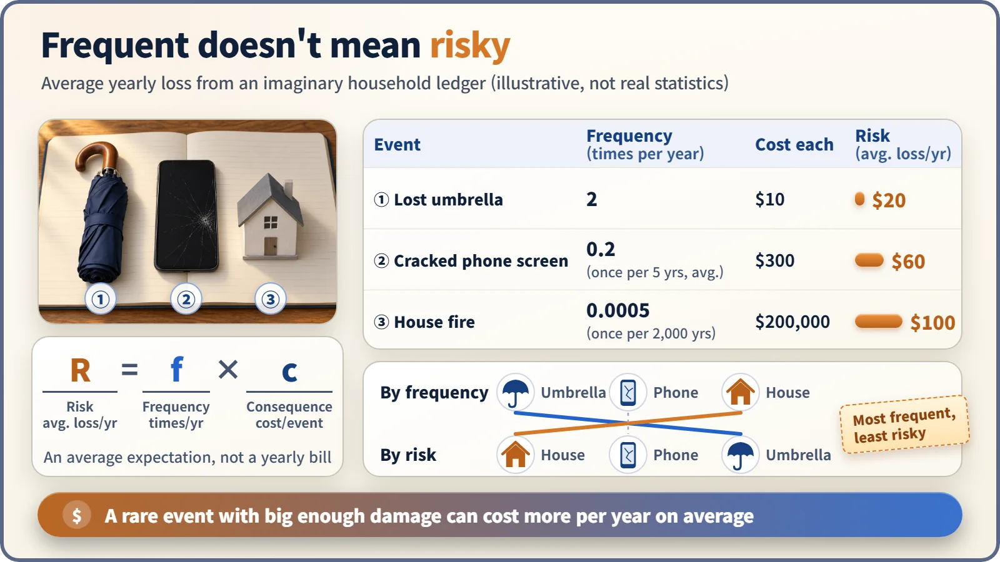
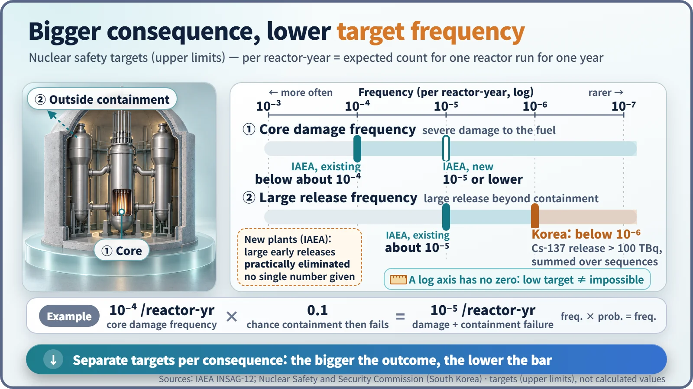

Safety Principles & Accident Analysis · 221
Insurers Worry More About Fire Than Umbrellas — Accident Frequency vs. Risk
Risk is frequency multiplied by consequence. A household ledger shows how the rarest event can carry the biggest yearly risk.
Frequency says how often something happens; risk says how often multiplied by how big the consequence is. A frequent event can carry little risk and a rare one a great deal, which is why nuclear safety goals set ever lower frequency limits for ever larger consequences. [1]
A quick quiz
Losing an umbrella, cracking your phone screen, a fire in your home. Which of these three is the most risky for your household budget?
If you said the umbrella because you lose one twice a year, you answered a different question: that is the thing that happens most often. Happening often and being risky are not the same thing, and the difference between accident frequency and risk is one of the basic keys to understanding nuclear safety.
Insurance is priced on "how often × how much"
When an insurer sets a premium, it looks at two numbers: how many times a year the loss happens, and how much it costs each time. Multiply them and you get the average loss per year. The numbers below are made up for illustration, not real statistics.
| Event | Frequency (per year) | Cost each time | Risk (average loss per year) |
|---|---|---|---|
| Lost umbrella | 2 | $10 | $20 |
| Cracked phone screen | 0.2 (once every 5 years on average) | $300 | $60 |
| House fire | 0.0005 (once every 2,000 years on average) | $200,000 | $100 |
Ranked by how often they happen, the umbrella comes first and the fire last. Ranked by the product, the order flips completely and the fire comes first. That is why insurers put far more effort into fire insurance than into umbrella insurance.

Pulling the two words apart
Frequency is how often something happens, and it always carries a time unit. In nuclear engineering the unit is per reactor-year: the number of times an event is expected if one reactor operates for one year.
Risk is frequency multiplied by the size of the consequence:
Risk = Frequency × Consequence
With several possible scenarios, each one is multiplied and the results are added. Risk is a single number for how much damage is expected, on average, per year. The 1975 U.S. Reactor Safety Study (WASH-1400) was the first to apply this multiplication to nuclear power plants in a serious way. [2]
Frequency also differs from probability, which is a unitless number between 0 and 1. Suppose the core (the center of the reactor where the fuel sits) is damaged once in 10,000 reactor-years, and that once this happens there is a 10% chance the containment building is breached too. Core damage followed by a containment breach then happens about once in 100,000 reactor-years. A frequency multiplied by a probability is again a frequency. [3]
The bigger the consequence, the lower the bar
Nuclear safety goals follow this multiplication directly: the bigger the consequence, the much lower the frequency allowed.
The IAEA's International Nuclear Safety Advisory Group (INSAG) set core damage frequency for existing plants below once in 10,000 reactor-years (10⁻⁴), and large releases of radioactive material beyond containment at least ten times rarer, at about once in 100,000 reactor-years (10⁻⁵). For new plants the core damage goal drops to 10⁻⁵, and large early releases are to be "practically eliminated." [4]
In South Korea, the Nuclear Safety and Security Commission set a large-release goal after the Fukushima accident: the summed frequency of all accidents releasing more than 100 terabecquerels (TBq) of cesium-137 must be below once in a million reactor-years (10⁻⁶). The bigger consequence carries a goal at least an order of magnitude lower. These numbers are targets not to be exceeded, not calculated values. [5]

Looking only at the multiplication, a tenfold bigger consequence at a tenfold lower frequency gives the same risk. Yet safety criteria are often drawn more steeply. People fear one big loss more than many small ones, even at the same expected value: losing $10 every year and losing $100,000 once in 10,000 years have the same average but do not feel the same. To reflect this risk aversion, bigger consequences are pushed down to even lower frequencies. The curve proposed in 1967 by F.R. Farmer in the United Kingdom was the starting point for this idea. [6]
Three places people trip over the numbers
"Once in 100,000 reactor-years means it's safe for 100,000 years." No. It is only an average, so it could happen tomorrow, or rarely, more than once. The accurate reading is "if 100,000 reactors ran for a year, about one on average." That is why procedures and equipment are prepared even for rare accidents.
"Lots of small faults means a dangerous plant." Plants are designed so that events that can happen often have small consequences, so risk can't be judged from fault counts alone. Frequent small faults can still be precursors of a bigger accident, so they are tracked carefully; frequency is not meaningless.
"Risk and hazard are the same thing." Hazard is the potential to cause harm, such as the amount of radioactive material in a reactor. Risk multiplies the frequency with which that potential becomes actual damage by the size of that damage. With the same material, stronger barriers and safety systems mean lower risk.
Key takeaways
Frequency is "how often"; risk is "how often × how big." Frequent events should have small consequences, and events with big consequences should be extremely rare. A plant's safety systems and layered barriers are arranged toward this principle, and the same calculation guides operation, for example when deciding how much risk rises while equipment is out of service for maintenance. The frequencies themselves are calculated with probabilistic safety assessment (PSA), a separate tool. [3]